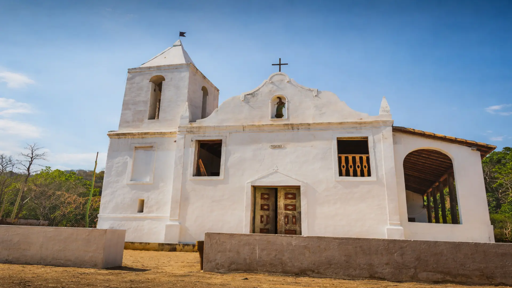

Sobre o local
Localizada no povoado de Barro Alto, distrito de Brejo do Amparo, a Igreja de Nossa Senhora do Rosário
conduz seus visitantes a uma verdadeira viagem no tempo. Possuindo indícios de construção de 1688, disputa com a Igreja de Nossa Senhora da
Imaculada Conceição em Matias Cardoso o título de igreja mais antiga de Minas Gerais. Reconhecida como patrimônio tombado pelo IEPHA/MG
devido à sua riqueza arquitetônica e histórica, a igreja está associada a uma das primeiras rotas das bandeiras rumo ao interior do Brasil,
antecedendo até mesmo o ciclo do ouro. A construção reúne influências da arquitetura baiana com traços paulistas, enquanto o interior
apresenta elementos ornamentais do estilo nacional-português, característicos da primeira fase do barroco mineiro, além de pinturas em
estilo rococó.
Informação importante: Atualmente a igreja encontra-se interditada devido a rachaduras em suas paredes.
Horário de funcionamento: Temporariamente fechada
Contato: Diocese de Januária (38) 3621-1342 mitrajanuaria@hotmail.com